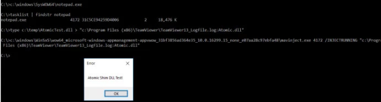

c:\windows\SysWOW64\notepad.exe
tasklist | findstr notepad
type C:\temp\AtomicTest.dll > ""C:\Program Files (x86)\TeamViewer\TeamViewer13_Logfile.log:Atomic.dll"
C:\windows\WinSxS\wow64_microsoft-Windows-appmanagement-appvwow_31bf3856ad364e35_10.0.16299.15_none_e07aa28c97ebfa48\mavinject.exe 4172 /INJECTRUNNING "C:\Program Files (x86)\TeamViewer\TeamViewer13_Logfile.log:Atomic.dll"
